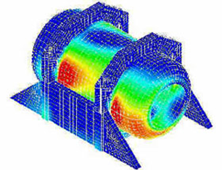
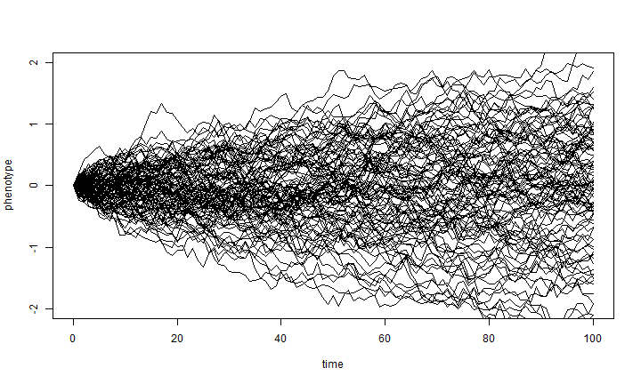

Computational Economics (ECO309)
Introduction
Communication for this Course
- zoom/jitsi for the course
- github repository for the course: https://github.com/albop/eco309
- enroll by:
- creating a github account if needed
- cloning the repository
- making a PR on students.md
- join on Zulip : we'll communicate in the eco309 room
- you're welcome to ask questions and answer other's questions (nicely)
- outside of the course hours, I'll answer when I can
- formal or infrequent communication:
pwinant@escp.euwith subject starting byECO309
Assignments and Final Exam
- Hands-on tutorial started in class must be (reasonably) completed by Friday night.
- Do not send by email. Just commit the work in your clone.
- There will be two special assignments with 7 days to complete each of them.
- Groupwork is OK as long as groups rotate.
- Final Exam will be a programming problem set to be taken individually.
- Final Grade will weight everything.
Other sources of information
- Course is supposed to be self-contained for its Math and Econ aspects.
-
Books:
- Economic Dynamics: Theory and Computation by John Stahurski
- Computational Economics by Miranda & Fackler
- Recursive macreconomic theory by Lars Ljungqvist & Tom Sargent
-
Online:
- QuantEcon lectures
- ... and all the Julia material
About me
- A computational economist
- Formerly Worked in institutions (IMF, BOE)
- Now at ESCP and CREST/Polytechnique
- Research on models about:
- Inequality (heterogeneity)
- International Finance
- Monetary Policy
- Artificial Intelligence
- Involved in several opensource projects (Dolo, QuantEcon, ARK)
Content of the course
-
Computational Economics is made of:
- Applied Math (theory)
- Programming (techniques)
- Economic Modeling (expertise)
-
We'll alternate between the three faces of the coin
- with a stronger than usual emphasis on Programming skills
Math
- We won't be used very advanced math
- linear algebra, Banach spaces, a bit of probabilities
- working knowledge is fine
- (almost) no proofs
- but in a context where advanced math is an option...
- functional spaces...
- applied math: essentially describes the algorithms and their validity/convergence properties
Models
- See a variety of models:
- static market determination
- dynamic optimization (continous or discrete)
- Dynamic Stochastic General Equilibrium models (DSGE)
-
In discrete time
- to avoid discretization schemes and stochastic calculus
-
Usually a model is specified by equations and some parameter values:
- no closed form, most of the time
- goal is to "solve" the model to study properties of its solutions
Models
- random exemples of questions we can analyse numerically:
- which sectors should receive more help during the coronavirus (CGE)?
- when is it time to replace a machine? how much water should be extracted? how much should be stored? (dynamic programming)
- what kind of shock drives the business cycles? (DSGE models)
- is a Central Bank able to commit to intervene in the markets?
Video upcoming
Why economics is not Physics (1)
- Easy!: you just swap particles for people, and simulate (or solve an IVP problem)
- NO: Not only local interactions: economic agents interact in many ways, including through markets
- All agents/prices must be solved at the same time
Why economics is not Physics (2)

- Easy!: it's a differential equation with boundary values (BVP)
- NO: agents think, they are forward looking and respond to other agents' decisions
What makes the life of computational economists hard:
-
Agents are rationnal, they should consider all possible outcomes and all decisions (and those of others...) in the future to make a decision today 
-
Very complex problem: curse of dimensionality when more than a few variables
- Wait, that's crazy! People are not that smart, let's make simplifying assumptions about their behaviour
- agent based approach
- methodological issues: too many possible predictions, too many parameters
Why should you learn to program ?
- Econometricians, modellers, data scientists, spend a lot of time writing code
- and do it inefficiently...
- Programming efficiently requires awareness of
- certain basic concepts: (types, control flow, functions, objects)
- some tools (programming language, code versioning, command line)
- which are never taught...
- And yet they are very easy to learn
- anyone can become an expert !
Now is the right time !
-
A lot of demand everywhere for skilled programmers.
-
Many faculties are introducing formal programming courses (for economists)
- MIT, NYU, Penn, ...
- Summer Bootcamps
-
New applications are even more code-intensive than before:
- data science
- machine learning
- modeling
Do it in the open !
-
Many excellent online resources:
- Software Carpentry
- QuantEcon from Tom Sargent and John Stachurski
- Julia manuals/tutorials
-
Opensource community is very welcoming:
- ask on mailing lists or online chats (Julia users, quantecon, dynare, ...)
- open issues (for instance against Dolo https://github.com/EconForge/Dolo.jl/issues
- participating is also a great occasion to learn